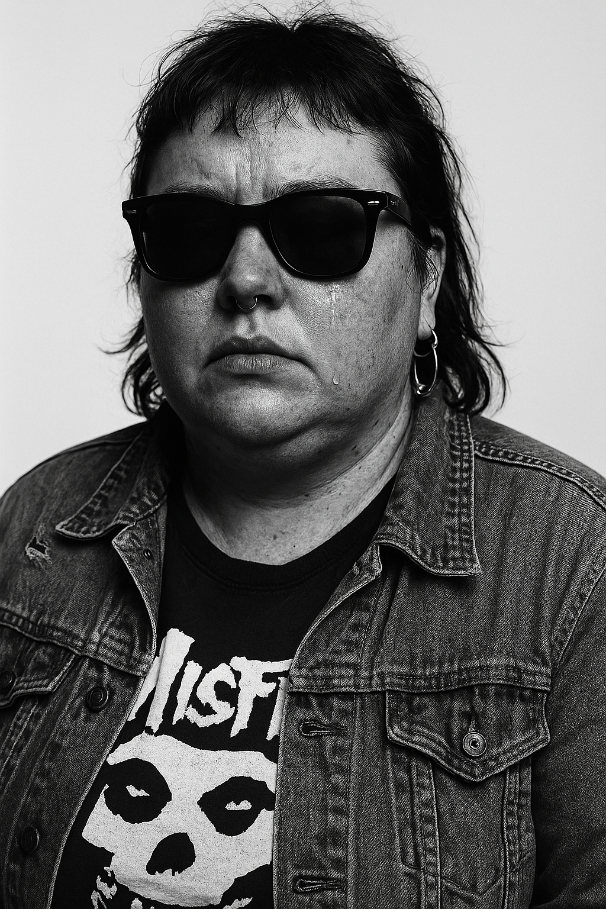
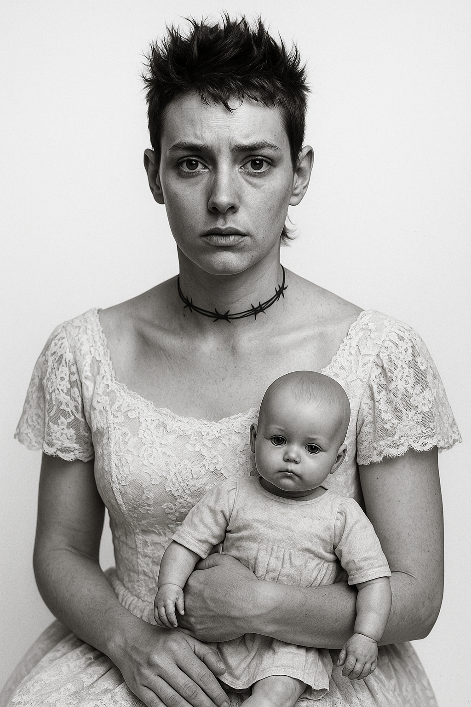
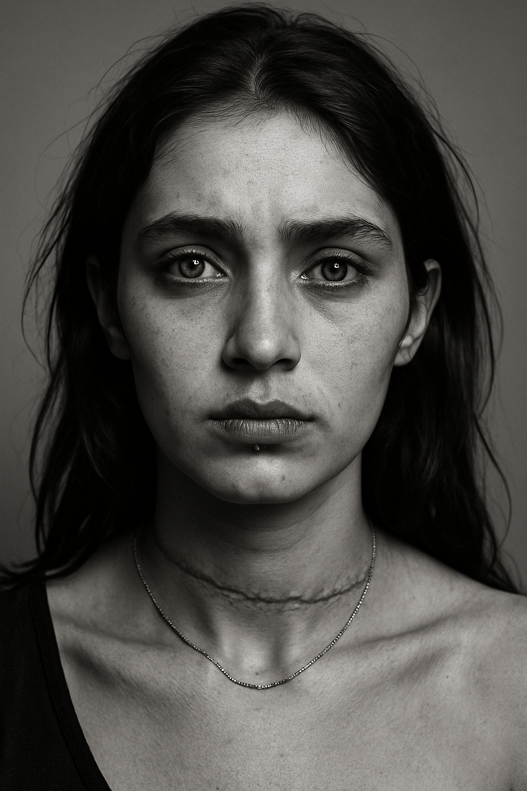
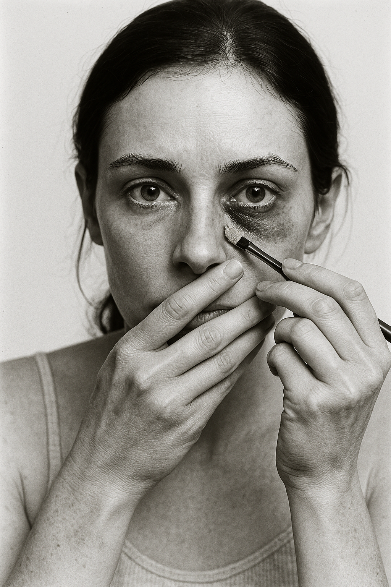
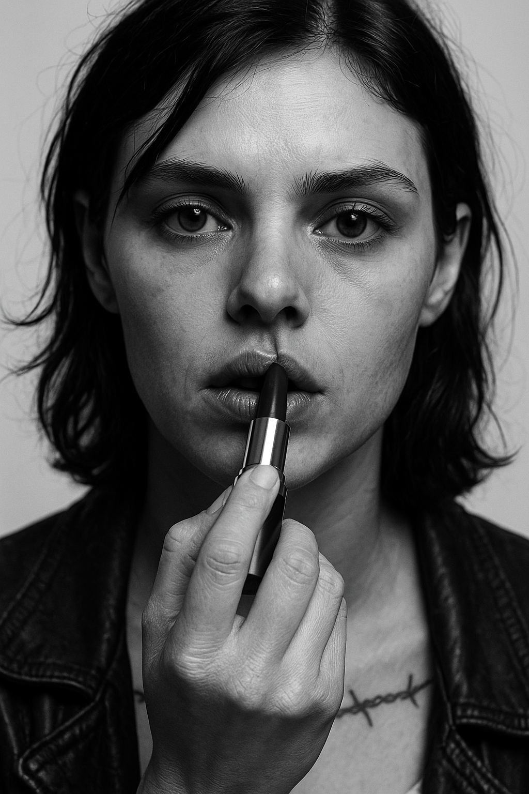
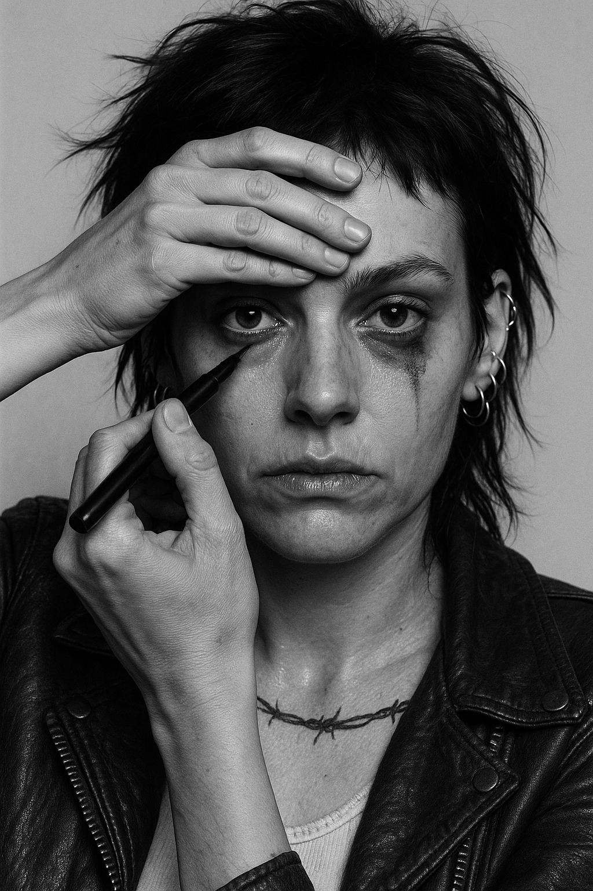
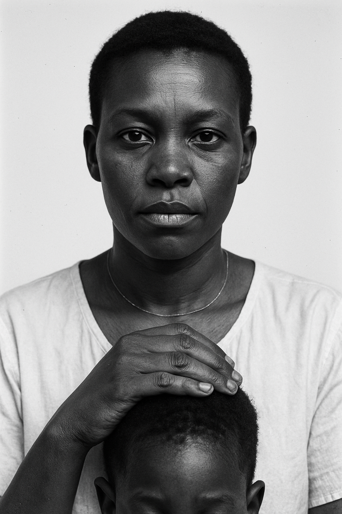
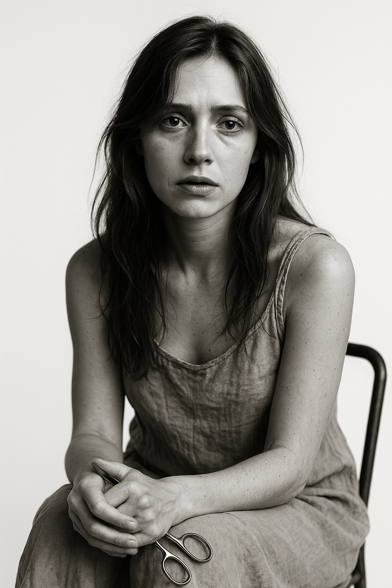

Gallery


















Dariush Bagheri
Artist, visual theorist, and architect of post-human narratives. Bagheri's practice dismantles the boundaries between photography, language, and code, creating images that exist beyond the tyranny of optics. His work does not “capture” — it summons. Each portrait is a collision between memory and machine cognition, a question etched into flesh and algorithm: What does it mean to see when cameras no longer exist?
Rather than stacking exhibitions as credentials, Bagheri positions his work as events of perception — ruptures in how we understand authorship, authenticity, and the gaze. After years navigating the fragility of identity, migration, and digital mediation, his projects now live at the threshold where human vulnerability meets synthetic intelligence.
With As We See, Bagheri proposes an insurgent aesthetic: an afterlife for photography, a manifesto of vision shared between carbon and silicon.